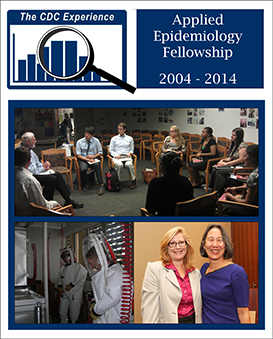
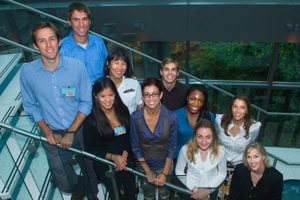
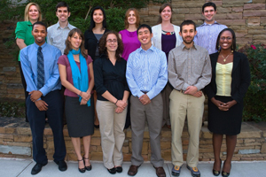
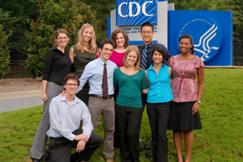
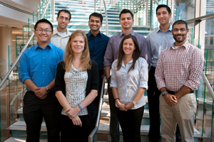

ShareCompartir
ShareCompartir
From 2004 to 2014, The CDC Experience Applied Epidemiology Fellowship provided hands-on public health experience to 82 third- and fourth-year medical students. During each year-long cycle, the fellows learned about CDC, applied epidemiology, the national public health system, and the role of physicians in that system. This innovative fellowship was made possible by a public-private partnership supported by a grant to the CDC Foundation from External Medical Affairs, Pfizer Inc.
Fellows gained in-depth perspective of epidemiology’s role in protecting the health and safety of individuals and of entire populations. The CDC Experience enhanced the population health perspective of these young physicians-in-training.
By participating in The CDC Experience, these medical students were better prepared for careers that blend clinical medicine with population health, including pursuing careers in clinical epidemiology, health services research, preventive medicine, and public health. For example, upon learning that more people in her state died from prescription-drug overdose than from motor vehicle accidents, one alumni during her residency worked with the dermatologic surgeons in her department to research opioid over prescription after dermatologic surgery — a topic not previously studied.
- About The CDC Experience
- Project Examples
- Legacy Project
- Current Fellowship Opportunities for Medical Students
- The CDC Experience Fellows
About The CDC Experience
The CDC Experience fellowship was carefully planned to prepare graduates for opportunities to become physician leaders and contribute substantially to the quality of the health care system. The program consisted of a balanced learning approach—a systematically designed curriculum that aligned with hands-on assignments. The first half of the curriculum focused on concrete and useful tools, such as epidemiologic study design and statistical analysis. The second half of the curriculum provided opportunities to synthesize broad concepts and create meaningful, personalized learning related to public health policy, social determinants of health, and leading change in a system focused on health, not just health care.
After a two-week orientation, fellows worked alongside CDC supervisors in their matched assignments. Guided by experienced CDC epidemiologists, fellows performed epidemiologic analyses and research, designed public health interventions, assisted in public health field investigations, and reported on findings through written and oral scientific presentations. Fellows also had the opportunity to participate in and lead monthly seminars and journal clubs and attend the annual Epidemic Intelligence Service (EIS) Conference .
Project Examples
Norovirus Outbreaks in Nursing Homes
- Purpose: to investigate the association between norovirus outbreaks and excess hospitalization and mortality from all causes in nursing homes by comparing mortality rates during outbreak periods with mortality rates during non-outbreak periods in Medicare-certified nursing homes in three states
- Professional Outcome/Benefits for the fellow:
- Gained a better understanding of survey development as well as the difficulties of conducting large, multistate studies
- Lead authorship on articles published in the Journal of the American Medical Association and the American Journal of Infection Control
Field Hospital Mortality after a Natural Disaster
- Purpose: To identify risk factors associated with mortality in the University of Miami Global Institute/Project Medishare field hospital, which was established after the 2010 earthquake in Haiti
- The main goal was to conduct a study that would result in useful information for organizations responding to future natural disasters
- Professional Outcomes/Benefits for the Fellow:
- Learned the importance of developing a research protocol that clearly outlines the need for the study, purpose of the study, and how the study will be conducted
- Presented the project at the Society for Academic Medicine Annual Meeting in Boston in June 2011
- Lead authorship of an article in the American Journal of Disaster Medicine, and was a co-author on a report published in Morbidity and Mortality Weekly Report
Obesity-related Patient Care Using Electronic Health Records (EHRs)
- Purpose: To investigate the functionality of their EHR to assist providers in obesity-related care.
- The fellow found that younger physicians, pediatricians, and family practitioners were more likely to have and to use EHRs to support their obesity-related care
- Professional Outcomes/Benefits for the Fellow:
- Improved data analysis skills in SAS, scientific research, and scientific writing
- Presented a poster on this work at the American College of Preventive Medicine Conference in New Orleans in February 2014
- Submitted an abstract for the American Academy of Pediatrics conference
- Won the 2014 Council on Clinical Information Technology Best Podium Presentation Award for her presentation on this topic
Opioid Prescription Drug Overdoses and Sales in North Carolina from 2008–2010
- Purpose: To investigate opioid prescription drug overdoses and sales by analyzing data from a Drug Enforcement Agency surveillance system that tracks the sales of controlled substances
- Characterized the sales patterns of opioids and compared them to emergency department overdose rates reported to a state-wide surveillance system in North Carolina
- Used these data to map sales of prescription opioids by Zip Code to identify high-risk areas
- Professional Outcomes/Benefits for the Fellow:
- Presented a poster on this study to the American Academy of Emergency Medicine/Journal of Emergency Medicine Scientific Assembly in February 2012
- Lead authorship of a paper covering this topic in the journal Drug and Alcohol Dependency
Legacy Project
Through a generous grant from Pfizer, CDC is exploring ways to transform the legacy of this fellowship by making some of the curricular components more widely available. The goal of The CDC Experience Legacy Project will be to enrich the development of health professionals by making tools and resources available. These resources will enhance their competency to improve community and population health in a changing health system.
Current Fellowship Opportunities for Medical Students
The CDC-Hubert Global Health Fellowship is a 6- to 12-week introduction to preventive medicine, public health, and applied epidemiology in an international setting.
The Epidemiology Elective Program is a 6- to 8-week introduction to applied epidemiology for senior medical and veterinary students.
The Preventive Medicine Residency and Fellowship includes two preventive medicine programs that provide hands-on experience in public health agencies at the federal, state, and local levels.
The list of all CDC fellowship programs available at the Public Health Training Fellowships website.
The CDC Experience Fellows
10 years of excellence
Trained 82 physicians in applied epidemiology
Prepared a medical workforce to meet the needs of communities
2004-2005
Bottom row, left to-right: Judd Flesch, Courtney Rowland, Cassie Kuo, and Mehul Tejani.
Top row, left to-right: Heidi Brown, Sean Kearney, Nitin Kapur, Barbara DeBuono (Pfizer sponsor), and Christina Mikosz.

2005-2006
Front row, left to-right: Teresa Dean, Dana Smith, KaLynne Harris, and Melanie Watts.
Back row, left to-right: Eric Dziuban, Taylor Wofford, Nicole Steinmuller, and Brendan Camp.
2006-2007
Left to-right: Susan Brim, John Openshaw, Adrian Flores, Jonathan Neyer, Aaron Kusano, Annie Hoopes, Emily Petersen, and Leslie Brooks.
2007-2008
Left to-right: Denise Koo (program director), Noelle Benzekri, Heather Peto, Colin Ligon, Alicia Genisca, Michael Marmot, Lisa Rynn, Joshua Vasquez, Catherine Koss, and Catherine Piper (program coordinator).

2008-2009
Left to-right: Brian Johnson, Patrick Peebles, Charlene Wong, Denise Koo (program director), Leslie Marino, Scott Tolan, Uju Obi, Jamie Krashin, Hannah Kirking, and Catherine Piper (program coordinator).

2009-2010
Front row, Left to-right: Jerome Taylor, Kim Insel, Rachel Robitz, Zong Law, Jeffrey Norris, Catherine Folowoshele (training coordinator).
Back row, left to-right: Virginia Watson (learning and development lead), Jefferson Jones, Jennifer Wai Lee, Rebecca Bak, Kari Bjornard, and Larry Cohen (lead medical epidemiologist).

2010-2011
Left to-right: Erika Wallendar, John McKenna, Theresa Dulski, Jonathon Ross, Rachel Winer, Michelle Starr, Justin Miyamoto, Diya Surie, and Allison Boothe.

2011-2012
Left to-right: Nan Xiang, Ben Meza, Emma Johns, Tarak Trivedi, Fernando Ovalle, Jennifer Bass, Farhad Modarai, and Rahul Ganatra.
2012-2013
Front row, left to-right: Allison Boothe, Julia Chang, Kerry Schnell, and Angela Mayorga.
Back row, left to-right: Ian Goldstein, Tabitha Herzog, Alex Chui, and Geoff Hart-Cooper.
2013-2014
Left to-right: Akash Gupta, Kenji Taylor, Jarratt Pytell, Hema Datwani, Jade Fettig, Kayla Bronder, Bridget Spelke (with Evie), and John Chiosi.
- Page last reviewed: March 24, 2016
- Page last updated: March 24, 2016
- Content source: